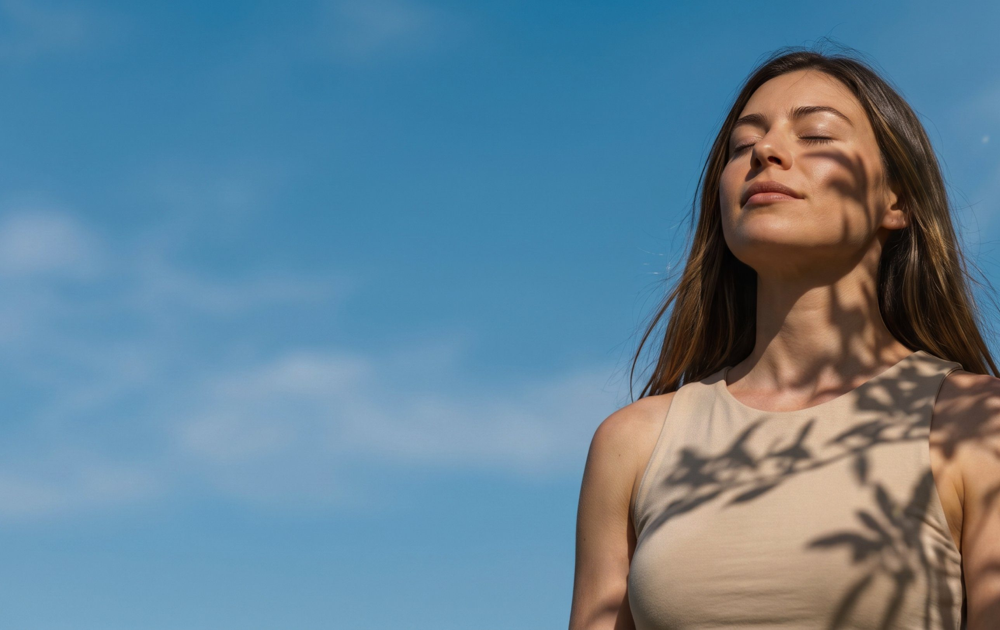
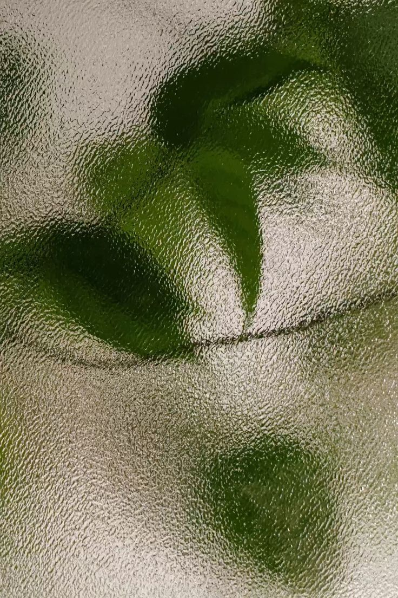
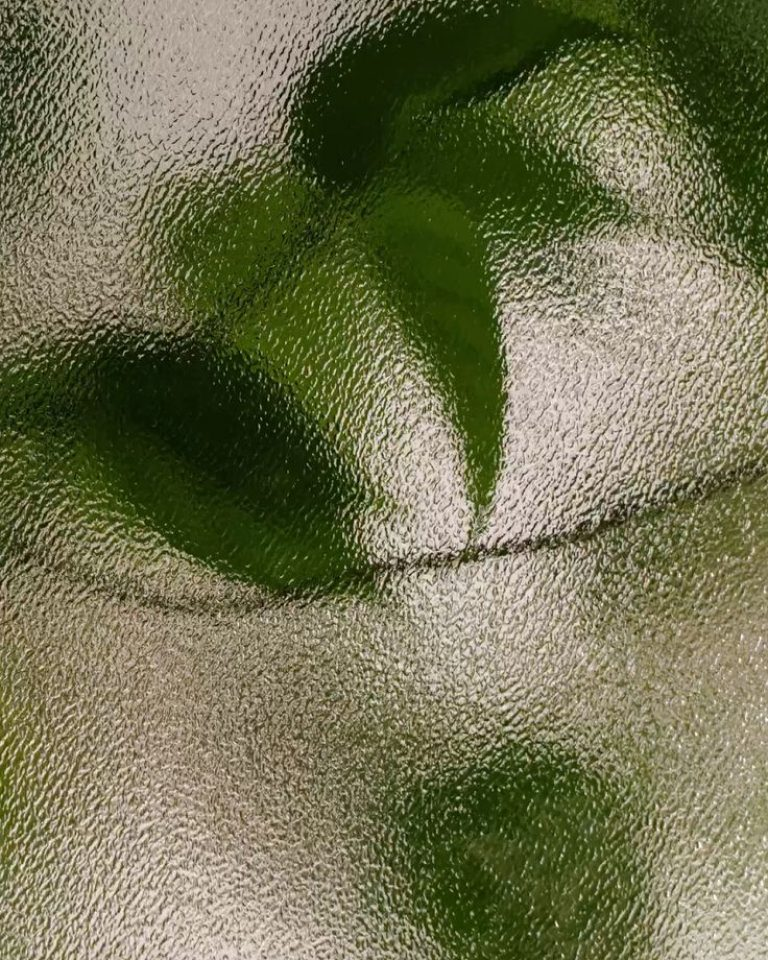
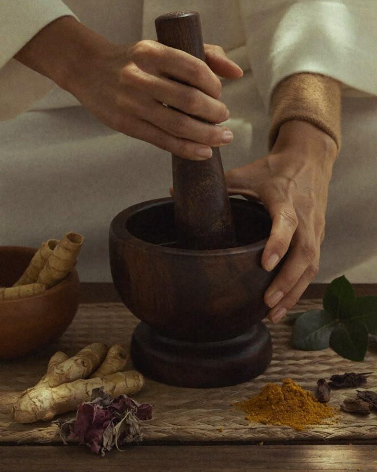
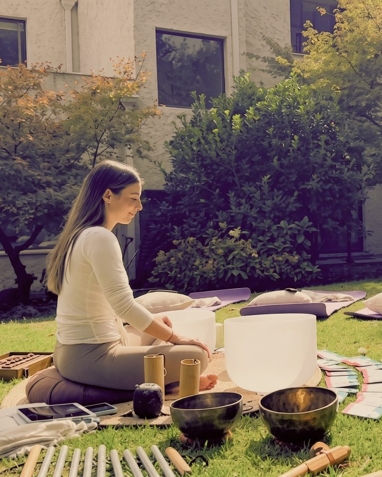
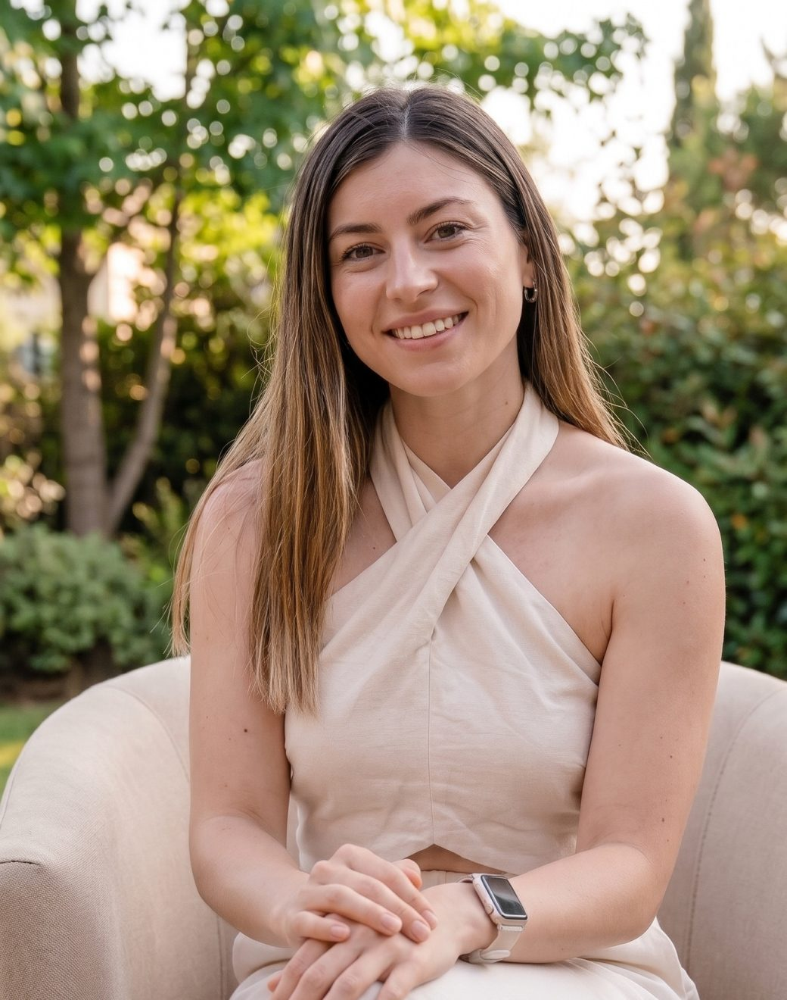
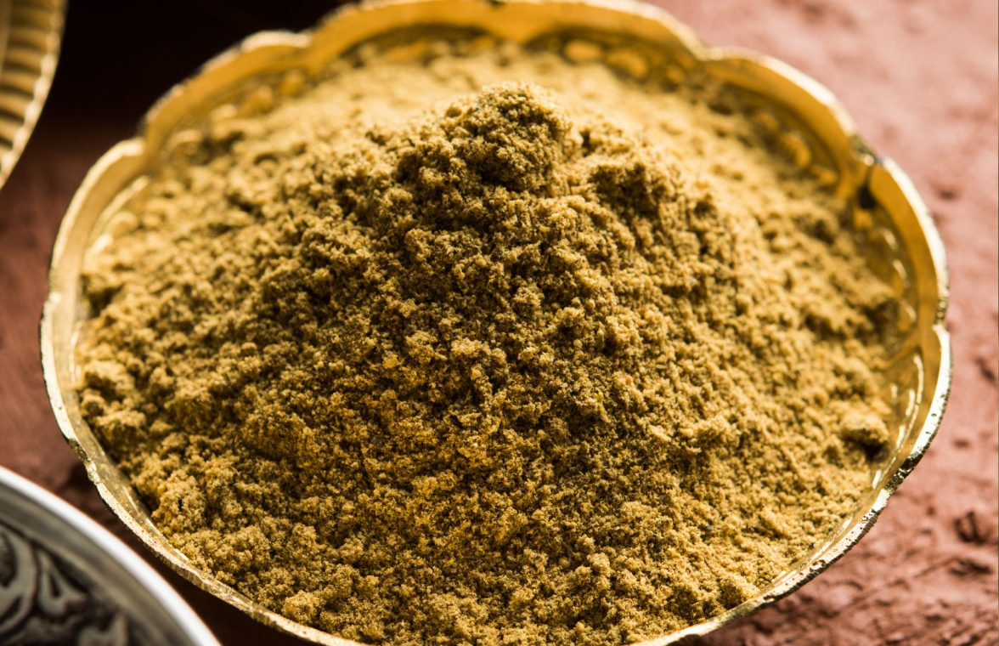
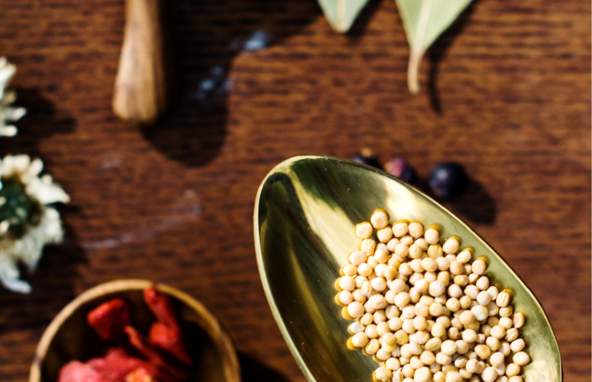
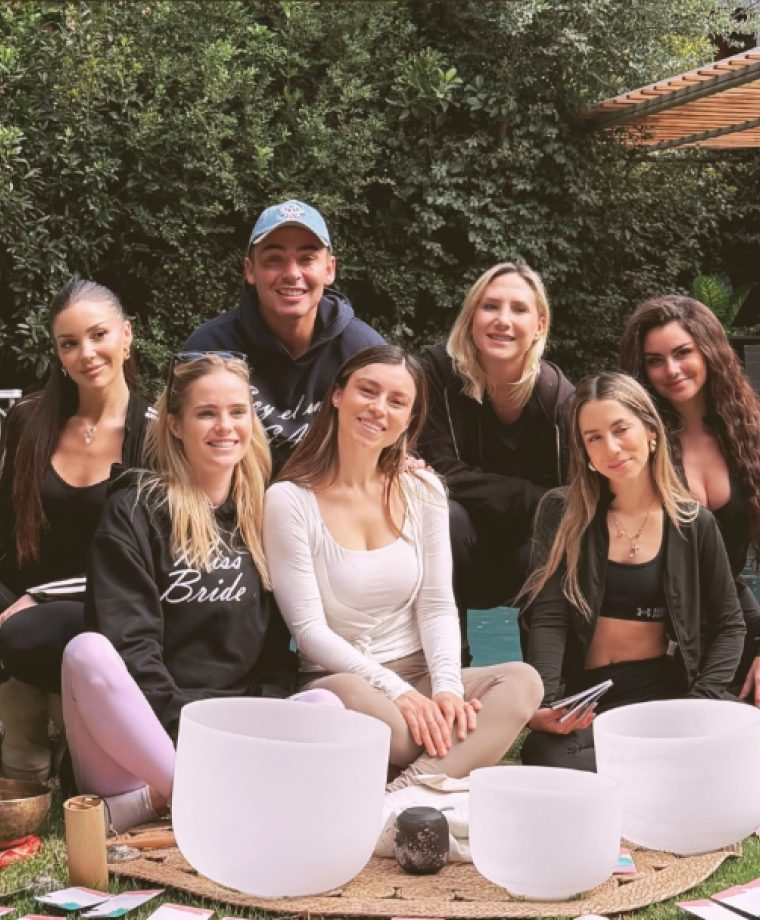

01
Ayurveda con respaldo
Vínculo entre saber ancestral, evidencia moderna y experiencia clínica en UCI.

Acompañamos procesos de bienestar que integran la sabiduría del Ayurveda, la evidencia científica y la experiencia clínica, para ordenar tus hábitos de forma simple, consciente y sostenible.
Magna es un centro de bienestar integral que integra el Ayurveda, madre de la medicina actual, con conocimiento científico, experiencia clínica y prácticas de autocuidado respaldadas por evidencia. Una mirada humana, preventiva y simple del bienestar.
Conoce MAGNA
01
Vínculo entre saber ancestral, evidencia moderna y experiencia clínica en UCI.
02
Registramos cada proceso para generar evidencia y ejercer con ética y responsabilidad.
03
Preventiva y personalizada, sin exigencias imposibles ni pautas genéricas.
04
Más de ocho años en Unidad de Cuidados Intensivos, hoy al servicio de la prevención.
Con este test puedes conocer tu constitución ayurvédica y recibir recomendaciones simples para volver a tu equilibrio.
Comienza el test18 preguntas · 3 minutos · gratis
Movimiento y ligereza. Rige la respiración, la circulación y el sistema nervioso. En equilibrio trae creatividad; fuera de él, dispersión y sueño liviano.
Espacios de pausa, regulación y reconexión inspirados en el Ayurveda y complementados con sonoterapia. Cada sesión se adapta a lo que tu cuerpo necesita hoy.

OnlineEvaluación completa y plan de hábitos hecho a tu medida.
Conoce la asesoría
PresencialAbhyanga, Shiro-abhyanga, Shirodhara, Pindas y Experiencia Integral Magna.
Ver terapias
Presencial · individual y grupalAsesoría · 1 a 4 meses
01
Digestión, sueño, energía y tu dosha.
02
Hábitos que puedas sostener.
03
Seguimiento mensual para ajustar.

“Creo en una medicina que empieza antes del diagnóstico: en escuchar, comprender y cuidar el cuerpo con coherencia.”
Nicole Peña
Soy Nicole Peña, kinesióloga y maestra en Ayurveda. Durante más de ocho años trabajé en la Unidad de Cuidados Intensivos de un hospital, donde vi que muchas enfermedades graves podrían haberse prevenido. Desde esa inquietud nació Magna.
Conoce nuestra historiaLa medicina empieza antes del diagnóstico.
La salud nace del autoconocimiento.
Los hábitos construyen nuestra salud, todos los días.
Guías descargables para llevar lo aprendido a tu cocina, tu rutina y tu descanso, a tu propio ritmo.

[Valor]

[Valor]
Comunidad Magna

Asesoría · 3 meses